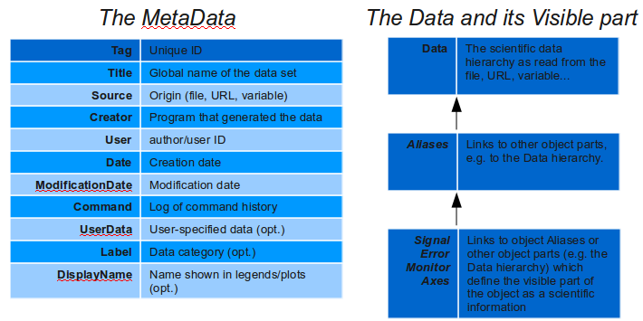
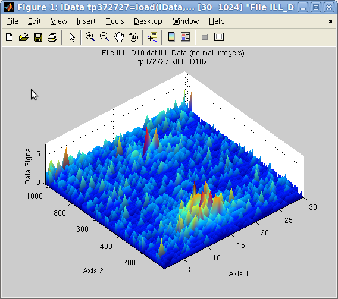
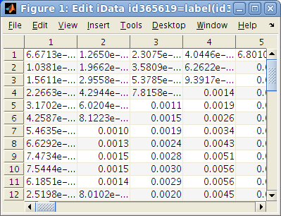

iFit: iData object description
Introduction to the iData objects
- Inquiring the iData
object (get, disp, display)
- Modifying the iData
object (set)
- Definition of
Aliases: links and values (setalias, getalias, set, get)
- Definition of the Signal,
Error bar and Monitor
- Definition of Axes
- Handling iData object
arrays
- Going further - some other useful
methods
Commands we use in this page:
iData, get, set, setalias, getalias,
setaxis, getaxis, labels,
methods
The iData class is a
structure which holds some imported data
(numerical blocks), as well as additional metadata and axes
definitions, Signal, Error bars,
Monitors,
and user defined fields (aliases). The instantiated objects, which are used as
normal Matlab variables, often contain 1D, 2D, 3D, nD histograms or nD
event lists.
You will learn below how to customize these objects (set, get,
setalias, getalias, setaxis, getaxis, indexing).
A large number of methods can be used with iData, including data
import, plotting, saving, fitting and mathematical operators.
For impatient readers, we advise you to refer to the quick Setting Signal and Axes documentation in the Load page, in order to customize the object. For the others, just go on reading how objects are built, and how to handle them.
Introduction to the
iData objects
An iData object is obtained for instance by transforming a file name
into an iData
object a
with
>> a = iData([ ifitpath 'Data/ILL_IN6.dat']) % imports a file into an object
a = iData object:
[Tag] [Dimension] [Title] [Last command] [Label]
tp460929 [257 512] 'File ILL_IN6.dat ILL Data (n...' tp460929=load(iData,...
which results in an iData
object. An other way to create such an object is to import directly
Matlab variables:
>> a = iData(rand(10))
>> a = iData(x,y,signal) % give the axes first, then the Signal
These objects, which internal structure can be obtained with the struct(a) method, hold a number of
important items:
- Some general information regarding the Source of the Data
(origin, filename), Dates,
Command History, User name and Creator.
- A unique ID, which can be complemented by an object Label (for
instance the name of an experiment) and a Title (for instance the name
of the sample).
- A Data field where all
actual scientific data is stored, usually
as a structure.
- Aliases, which may hold
themselves data, or be defined as links
to other parts of the object.
- A Signal, an Error bar and a Monitor which can either hold data,
or point to other parts of the object.
This defines the visible part
of the object.
- A series of Axes, which
are
usually
defined
as
links
to
Aliases
or other Data parts. These
Axes indicate how to interpret the Signal
as a scientific data set.

The iData object internal internal
structure.
In principle, the objects should not
be accessed or modified as structures. Indeed, some dedicated methods,
which match the usual Matlab
commands, have been designed to maintain the object integrity along
operations. This includes methods for
- loading data (see the Load page)
- inquiring and manipulate the object contents (see below)
- plotting (see the Plot page)
- performing computations (see the Math
page)
- fitting and adjusting model/function parameters to match the
object data (see the Fit page)
- saving/exporting the object into various formats and data types
(see the Save page)
In the following, we shall present how to manipulate iData objects,
enrich them with additional information, define relations between the
object parts as Aliases, define
the object Signal and its
associated
Axes.
Any object dimensionality can be handled. A more limited support exists
for event based data sets.
To get
more help: list of most iData
methods
with comments
Inquiring the iData
object (get, disp, display)
The main idea here is that iData objects can be handled the same
way as structures and Matlab
Graphics Objects using get and set methods.
A quick overview of an iData object a is displayed
when issuing the command
>> a = iData([ ifitpath 'Data/ILL_IN6.dat' ]); % converts a file name into an iData object
>> a
ans = iData object:
[Tag] [Dimension] [Title] [Last command] [Label]
tp481575 [257 512] 'File ILL_IN6.dat ILL Data (n...' tp481575=load(iData,...
showing the object unique ID, its dimensions, title, the last
command which produced the object, and an optional label (here empty).
The same output
is given by the display(a)
command.
But a more useful formatting of the same information is obtained using
get or disp
which both result in the following output
a = iData 2D object of size [257 512]:
Title: 'File ILL_IN6.dat ILL Data (normal integers)'
Source: 'iFit/Data/ILL_IN6.dat'
Command: {'tp481575=load(iData,'iFit/Data/ILL_IN6.dat');'}
UserData: ''
Label: ''
DisplayName: ''
Creator: [1x119 char]
User: 'farhi on localhost'
Data: [1x1 struct]
Date: '20-nov.-2007 23:11:26'
Tag: 'tp481575'
ModificationDate: '12-Oct-2010 17:48:16'
Object aliases:
[Name] [Value] [Description]
Signal Data.IIIIIIIIIIIIIIIIIIIIIIIIIIIII_13 Data Signal [0:27172]
Error sqrt(Signal) Error on Signal
Monitor 1 Monitor (weight) '1'
Attributes Data.Attributes Headers from ILL_IN6.dat
|
This latter display indicates the definition of the Signal, Aliases and
Axes (if any - see below).
As we shall see below, it is simple to extract the object value (Signal) and Axes:
>> a.Signal % returns the Signal value
>> a{0} % returns the Signal/Monitor value
>> a{1} % request the 1st axis values
A single field can be accessed in an object or an array of objects, by
means of the get
function (just like for the Matlab
graphics objects):
>> a=load(iData, [ ifitpath 'Data/*.scn']) % returns an array of iData objects
>> get(a,'Title') % returns the Title of all objects in the array
>> get(a(1),'Title') % returns the Title from the first object
where this latter is equivalent to accessing
>> a(1).Title
>> b=a(1)
>> b.Title
Field names are case insensitive, that is b.title will also work.
Any field may be accessed, including subfields, just as a normal
structure
>> get(a,'Data.VARIA.A1') % returns all A1 values from the array of objects
>> a(2).Data.VARIA.A1 % same but only for the second array element
>> a(3).Data % returns the complete Data structure from the 3rd object in the array
Accessing subfields requires a case sensitive name match, that is a a(3).data works (single field
accessed), but a(3).data.varia.a1 does
not
(requires
fully
qualified
path
to
the
data).
The get
function can also
apply with iData arrays, as shown above, and then returns cell arrays.
The content of objects can be searched with the findstr and findfield
methods which search for a character string as a content or as a field
name:
>> a=load(iData, [ ifitpath 'Data/sv1850.scn'])
>> [match, field]=findstr(a,'TAS');% searches matches within object contents
match =
'UPt3;File sv1850.scn ILL TAS Data'
[1x105 char]
[1x169 char]
'ETAS= '
field =
'Title'
'Creator'
'Data.Attributes.AAAAAAAAAAAAAAAAAAAAAAAAAAAAAAAA'
'Data.Attributes.PARAM.ETAS'
>> findfield(a,'TAS') % searches matches within object members/aliases/fields
ans =
'Data.PARAM.ETAS'
'Data.Attributes.PARAM.ETAS'
Some data file formats provide additional 'attributes' to each numeric content (e.g. NeXus/HDF/NetCDF/CDF. See Loaders). You can access these associated attributes with the fileattrib method:
>> fileattrib(a, 'Data.Attributes.PARAM.ETAS')
ans =
ETAS=
>> a=iData([ ifitpath 'Data/IRS21360_graphite002_ipg.nxs' ]);
>> getalias(a,'Signal')
ans =
Data.mantid_workspace_1.workspace.values
>> fileattrib(a,'Signal')
ans =
signal: 1
axes: 'axis1,axis2'
units: ''
unit_label: ''
The findobj
method can be used to inquire all iData objects available in the
workspace:
>> a = findobj(iData);
>> a = findobj(iData, 'Property', 'Value'); % searches for objects that match a Property/Value pair
It is also possible to plot the object, and we direct the reader to the
Plotting page.
>> a = plot(a);
Last, the object Signal
normalized to the Monitor can
be displayed as a Table/spreadsheet (beware the size of the object !)
>> a = edit(iData);
Modifying the iData
object (set)
The content of the objects can be modified
using the set
function:
>> a=load(iData, [ ifitpath 'Data/*.scn']) % returns an array of iData objects
>> set(a,'Data.VARIA.A1',40); % modify the whole array Data content
>> set(a(1),'Data.VARIA.A1',40); % modify a single Data content
The new assignments apply on the object itself when the method call
has no output argument, but can additionally
be copied to an other variable:
>> b = set(a(1),'Data.VARIA.A1',40); % modify the Data content and send back the modified object
The set assignment may also
be used with arrays of iData objects.
This syntax can be simplified by adopting the structure-type one:
>> a=load(iData, [ ifitpath 'Data/sv1850.scn'])
>> a.Data.VARIA.A1
ans =
40
>> a.Data.VARIA.A1 = 41 % returns the modified object
We shall see below that there is a way to extend an iData object, that
is add some new information,
and to create links within
the object.
The Title
of an object usually stores the origin and type of the data (filename).
>> a=load(iData, [ ifitpath 'Data/sv1850.scn'])
>> a.Title
ans =
UPt3;File sv1850.scn ILL TAS Data
In addition, an object Label can be
defined to e.g. sort objects
with user defined names, such as 'Measurement1',',Background', ... in
the
spirit of Labels (Mac OSX) and Emblems (Linux/Gnome) in window managers
to provide customized colours and/or icons.
>> a.Label = 'TAS'
a = iData object:
[Tag] [Dimension] [Title] [Last command] [Label]
tp120236 [15 1] 'UPt3;File sv1850.scn ILL TAS...' tp120236=set(tp12023... TAS
These can be searched using the findfield, and findstr methods,
see above, or findobj(iData,'Label','TAS').
Definition of
Aliases: links and values (setalias, getalias, set, get)
An Alias in iData objects
correspond to user fields, dynamically created and evaluated. The
previously seen UserData
field of the iData structure is static. One can indeed store something
there, but there is only one such slot. We shall see that not only we
can create new fields to hold some information, but also that these Aliases can point onto other
aliases or parts of the iData object.
The main methods used to assign and extract Alias definitions are setalias and getalias
respectively. We shall see below that the set and get methods can
also be used, but only apply on the Alias values (which is usually a
numerical one).
defining a new field
as a value
The method used to define (or re-define) an Alias is setalias:
>> a=load(iData, [ ifitpath 'Data/sv1850.scn'])
>> setalias(a,'NewField',42)
In this latter case, that is when Aliases are defined as numerics (scalar, vector, matrix),
this is strictly equivalent to
>> a.NewField = 42
>> set(a,'NewField',42)
The mechanism seen here works for numerical fields, but will fail if
you decide to store structures and cell arrays into an Alias. Then, we
recommend to define a new member in the Data part of the object, and then
point to it as a link, as explained below.
Alias names are case
insensitive, that is a.newfield
will also work.
In addition, each Alias can
be associated with a label/comment when creating it:
>> setalias(a,'NewField',42,'Answer to the Ultimate Question of Life, the Universe, and Everything')
or with the label
method:
>> label(a,'NewField','Answer to the Ultimate Question of Life, the Universe, and Everything')
The current label of an Alias
is inquired similarly with the label method
>> label(a,'NewField')
ans =
Answer to the Ultimate Question of Life, the Universe, and Everything
The alias labels are used as axis labels when plotting
objects.
getting the value of a
new field
The method used to extract the definition of an Alias is getalias:
>> getalias(a,'NewField')
ans =
3
In this case, that is when Aliases are defined as numerics (scalar, vector, matrix),
this is strictly equivalent to
>> a.NewField
>> get(a,'NewField')
defining a new field
as a link (reference)
The same setalias method can
be used to assign an Alias as an expression. In the following example,
a QH alias has been
automatically defined as a numeric vector when importing the file, and
we define a new Alias which points to it:
>> a=load(iData, [ ifitpath 'Data/sv1850.scn'])
>> a.QH
ans =
0.9791
...
1.0214
>> setalias(a,'NewField','QH')
which makes it so that NewField
is de-facto QH.
Links which can not be evaluated are returned as is, that is as
character strings.
As explained below, it is possible to define links to othet links, or external files.
Links to other links
More complex links may be defined to other
parts of the object or to an other Alias,
>> setalias(a,'NewField','Data.ZEROS') % a link to the whole ZEROS subfield structure
>> setalias(a,'NewField','Data.ZEROS.A1') % a link to the A1 value in the ZEROS subfield
>> setalias(a,'AnotherNewField', 'NewField'); % creates a link to a link to a Data part (follow me !)
>> a.AnotherNewField
ans =
-115.7500
The AnotherNewField points to
NewField, which was defined as Data.ZEROS.A1.
This brings the ability to enrich the Data area of the object with new
content, and then define an Alias which links to it:
>> a.Data.NewContent1 = rand(10); % add a new array in the Data
>> a.Data.NewContent2 = struct('a',1,'b', rand(10)); % add a new structure in the Data
>> setalias(a,'HowAreYouToday', 'Data.NewContent2');
Links as more general expressions
Advanced Alias
definition may be set by means of the 'this' self-referring
symbol
which
can
be
used
within
full
expressions.
'this' then
refers to the object itself.
>> setalias(a,'NewField', '[ this.Data.ZEROS.A1 this.Data.VARIA.A1 ]') % an expression which is built from two links
>> a.NewField
ans =
-115.7500 39.2600
>> a.AnotherNewField
ans =
-115.7500 39.2600
In this last example, we have changed the NewField definition, which
immediately affects AnotherNewField (defined
above).
The links are evaluated dynamically, so
that
their
value
follow
the
target
one.
Links to external resources
In the case the link begins with file://, ftp://, http://, or https:// the external resource is accessed when requesting the alias value, and its full content is retrieved as a structure using iLoad. The external link may optionally end with an anchor specification #keyword, and the matching elements in the external file are then selected and returned.
>> setalias(a,'NewField', [ 'file://' ifitpath '/Data/sv1884.scn#Data' ])
The file is accessed for each alias value request.
getting the definition of a new field
(reference)
In the previous examples, the QH
Alias has been defined from the import routine, and it is assigned a
static array (you can see that by looking at the get(a) output).
>> a=load(iData, [ ifitpath 'Data/sv1850.scn'])
>> setalias(a,'NewField','QH')
>> get(a,'NewField') % is the same as a.NewField: return the value
ans =
0.9791
...
1.0214
>> getalias(a,'NewField') % return the definition
ans =
QH
We see here that the get method
follows definitions recursively until a numeric value is found.
The getalias
returns the current Alias definition, but does not propagate to other
potential links.
assigning the value of a linked field
When assigning a value to an Alias with the equal sign and the set method, the
value is propagated until the fully qualified path is found. This means
that when an Alias is a linked field, setting its value will affect the
target, but not the Alias itself:
>> a=load(iData, [ ifitpath 'Data/sv1850.scn'])
>> setalias(a,'NewField',3) % a static scalar
>> setalias(a,'AnotherNewField', 'NewField');
>> a.NewField
ans =
3
>> a.AnotherNewField = 4 % this stores 4 in the NewField alias !
The direct structure-like assignment and set method
propagate the assignment value to the fully qualified link.
getting the value of a linked field
The direct structure-like reference and get method propagate the fully
qualified link in order to actually find its value.
>> a=load(iData, [ ifitpath 'Data/sv1850.scn'])
>> setalias(a,'NewField',3) % a static scalar
>> setalias(a,'AnotherNewField', 'NewField');
>> get(a,'AnotherNewField') % evaluated as NewField, then as 3
ans =
3
>> a.AnotherNewField % returns the same as get
removing a field from the object
Added Alias fields can be
removed/deleted by setting their value to empty or using the rmalias method
>> a=load(iData, [ ifitpath 'Data/sv1850.scn'])
>> setalias(a,'NewField','PNT') % point to PNT, which is a vector here
>> setalias(a,'NewField','') % removes NewField alias
>> rmalias(a,'NewField')
whereas the similar set command
removes the final target PNT but
leaves the NewField Alias
pointing to nothing.
>> setalias(a,'NewField','PNT')
>> set(a,'NewField','') % removes PNT, leaves NewField in error state (undefined)
Re-defining PNT will, at the
same time, re-enable NewField.
A warning is in place here
As the set and get methods follow the Aliases definitions until the final
value is obtained, this also applies to re-definitions of Aliases. In the previous example,
if we now use the set
method, we shall modify the final
definition of the Alias, that
is
the
one
obtained
by
following
all
definitions:
>> setalias(a,'NewField','QH')
>> set(a,'NewField',1) % will set QH to 1
That's why we strongly recommend to use setalias when
you wish to control an Alias
immediate definition, and set when you
want to control its final value. The setalias can
also define the Alias as a
static numerical value, as seen previously, without risking to affect
deeper object parts. Similarly, a call to getalias will reveal the
nature of the Alias, as link or numerical value.
An other example would be to define QH
as a column of a matrix. Changing its value, or the one of any further Alias pointing on it will
effectively modify the column in the matrix itself.
In a few words, the set/get functions work just as the linking
mechanism in Linux/Unix systems with the ln command.
- The get function always
return the value of a field, and a.field
returns the same result as get(a,
field)
- The set function always
defines
the final value of a field, and we shall see that it may sometimes
follow a series of definitions in the case of Aliases. The a.field=value syntax is equivalent
to set(a,field,value).
- The getalias function
always return the current Alias definition
- The setalias function
always set the current Alias definition
Definition of the
Signal,
Error bar and Monitor
The Signal is a special Alias that points to a numerical
block which is the relevant data to handle for plotting or computing
(see mathematical operations).
As an alias, its value and definition can be accessed with all
the following methods (refer to the Alias
section above):
>> a=load(iData, [ ifitpath 'Data/sv1850.scn']) % returns an iData object
>> a.Signal % returns the Signal value as an Alias
>> get(a,'Signal')
>> getalias(a,'Signal') % returns the Signal definition, which here points to the CNTS Alias
In the iData terminology, the Signal/Monitor is the rank 0 axis (see
the Axis section below)
>> getaxis(a, 0 ) % request Signal/Monitor value as an axis
>> a{0}
Setting the axis 0 with a value first multiplies it by the Monitor, and
then sets the Signal. In case you want to ignore the Monitor weighting,
simply assign the Signal directly.
The Signal label can be inquired or set with the usual setalias and label methods
seen in the Alias section.
>> label(a,'Signal') % returns the current Signal label
>> label(a,'Signal', 'Make it so ?')
>> label(a, 0, , 'Make it so ?')
This label is shown on plots along the Signal axis (e.g. Y on 1D plots
and Z on 2D plots). We point out that the object can be assigned a
global Title and Label as well. The title is shown as the plot title
and the object text display (see Inquiring
the
iData
object).
It is also possible to extract a portion of the signal from an iData
object, similarly as for a normal array:
>> a=load(iData, [ ifitpath 'Data/sv1850.scn'])
>> a([ 2 4 6 8 9])
creates a new iData object with a subscript Signal (and relevant axes definitions - see below).
Dimensionality and
Types of Signals that
can be handled
The dimensionality of the
iData object is the one from its Signal. It is obtained from the ndims method and
the length of each dimension is obtained with the size method.
>> a=load(iData, [ ifitpath 'Data/sv1850.scn'])
>> ndims(a)
ans =
1
>> size(a)
ans =
15 1
In principle, there is no limitation concerning the size of the Data
and Signal, and the dimensionality (except memory restrictions). The
following table indicates the different types of Signal that the iData can handle,
and the associated requirements regarding Axes.
Dimensionality
|
Signal
size
|
Related
axes
|
empty ndims=0
|
Signal is empty
|
No axis
|
0D scalar ndims=1
|
Signal is a single number
|
In principle, no axis is needed
here.
|
1D vector ndims=1
|
Signal is a vector
|
One Axis required, as scalar or
vector
|
2D matrix ndims=2
|
Signal is a matrix
|
Two axes required, as scalar,
vector or matrix matching Signal
|
3D volume ndims=3
|
Signal is a volume
|
Three Axes are required, as
scalar, vector, matrix or volume matching Signal |
nD
grid
space
ndims=n
|
Signal is nD
|
n
Axes are required, each may have a dimensionality from 1 to n, with preference for vectors.
|
nD event - column based ndims=n
|
Signal is a long vector (1D)
|
n
Axes are required, each being a scalar or vector of same length as
Signal. NOTE: Not all Math
methods support this type of data, and it should be converted, when
appropriate, into nD grid histogramed with the hist or interp operators (see Math/interpolation).
|
The first dimension refers to rows, the second to columns, the third to
pages, and so on.
Error bars definition
The Signal is attached to an Error bar, which represents an
uncertainty on a Signal value. The Error
bar is considered to be symmetric w.r.t. each Signal value. This Error propagates
along most mathematical operators and is also
used for proper weighting of optimization
methods when performing model fit
using e.g. a least-square criteria. No error bar mechanism is currently
implemented for axes and aliases.
>> a=load(iData, [ ifitpath 'Data/sv1850.scn'])
>> a.Signal
>> a.Error
>> getalias(a,'Signal')
ans =
CNTS
>> getalias(a,'Error')
ans =
sqrt(this.Signal)
The Error defaults to sqrt(Signal)
when not set (that is a.Error=[]).
A
constant
Error can be set,
an expression (including using Data
or this) or any numerical
value that matches the Signal
size.
Monitor definition
Similarly, a Monitor is
attached to the Signal. It
represents e.g. a counting time or any statistical weight that is to be
taken into account when performing mathematical
operations such as combine and most binary operators (+-/*) involving
normalization between signals. In these cases, the Signal and Error are divided by the Monitor prior to performing the
operation, and multiplied back after operation.
The Monitor defaults to 1
when not set (that is a.Monitor=[]).
A
constant
Monitor
can
be
set,
an
expression
(including
using
Data
or this) or any numerical
value that
matches the Signal size.
The Signal, Error and Monitor fields of an iData object are protected Aliases: they can not be deleted.
Definition of Axes
Axes are defined just as
Aliases. They are used for Math operations and
plotting.
Axes are indexed from 1 up to
the Signal dimensionality, that is a
vector Signal has one axis, a
matrix has 2 axes, a volumetric signal has 3.
The 1st axis relates to the number of rows, the 2nd axis to
the number
of columns, the 3rd axis to the depth, and so on. The axis index then
is associated to the mathematical definition of indexes in a
matrix/tensor.
However, the 'X', 'Y' convention is
the one
used in standard Matlab 2D/3D plots such as surf and mesh. This corresponds to the
logical axes when looking at a matrix from above with horizontal axis
referring to columns and vertical to rows, starting from the lower left
corner.
NOTE: As a result, the axis of
rank 1 is usually labelled as 'Y' (on rows, that is vertical for a
matrix seen from above), and the axis of rank 2 is labelled as 'X' (on
columns, that is horizontal) except for 1D objects where this is the
rank 1.
getting an axis
As they are basically Aliases, Axes
are accessed in two ways, either through their definition,
that is their link, or through their value. This is done through the getaxis function:
>> a=load(iData, [ ifitpath 'Data/sv1850.scn']) % returns an iData object
>> getaxis(a, 1 ) % request axis 1 values, that is 'Y' along Signal rows
>> getaxis(a,'1') % request axis 1 definition
where the first command returns the 1st axis values, and the second
commands returns its definition, which may be a link to a Data part.
The axis value can also be obtained with the quick reference notation {n} (which works up to rank
n=9) :
>> a{1} % returns the 1st axis values = getaxis(a,1)
>> a{'1'} % returns axis definition = getaxis(a,'1')
ans =
QH
In principle, the axis rank should be within 1 up to the object
dimensionality.
Upon request, any undefined axis is automatically created when it
matches the Signal
dimensionality.
The label of an axis is the one from its associated Alias, but can be accessed with the
fast syntax:
>> label(a,1) % returns the 1st axis label, which is QH here
ans =
QH axis Ki=1.48
setting
an
axis
The common way to define an axis is by means of the setaxis
>> a=load(iData, [ ifitpath 'Data/sv1850.scn']) % returns an iData object
>> setaxis(a, 1, 23) % directly fixes the value of the axis to a constant 23
>> setaxis(a, '1', 'QH') % defines axis 1 as 'QH', which is an alias of the object
The fast notation a{n} can
also be used for direct assignments
>> a{1} = 23 % directly fixes the value of the axis to a constant 23
>> a{'1'} ='QH' % re-defines axis 1 as 'QH', which is an alias of the object
In
case
a
new
Axis is defined
with a numerical value (scalar, vector, matrix, ...), an Alias is automatically created, and
the Axis then points to it.
The axes labels can be defined the same way as Aliases, but given their rank:
>> label(a, 1, 'change label of QH')
and there is a fast notation for axes of rank 1 to 4, similar to the Matlab Graphics Object syntax,
where the 'X' and 'Y' are swapped for ranks 1 and 2 (see note above):
>> xlabel(a, '2st axis label') % except for 1d objects where it points to the first axis
>> ylabel(a, '1st axis label')
>> zlabel(a, '3st Z axis label')
>> clabel(a, '4st C axis label')
WARNING:
when assigning an axis, in the case it has been previously
defined as a link, the target of the link is assigned (refer to the relevant Alias section for more
information).
Axes can be deleted with the rmaxis
method, in which case default axes are used for further operations
(math, plot, ...)
Handling iData object
arrays
Most iData methods apply on both single objects and arrays of objects.
In many cases, with input arrays, the result is given back as cell
arrays or iData arrays. This vectorization is suited to the iterative
handling of large amounts of data sets. The zeros method initializes an empty
(or constant) array of objects.
>> a=zeros(iData, size) % creates a [size] array of empty objects
>> a=zeros(object, size) % duplicates 'object' as a [size] array
The squeeze
method acts just like the usual Matlab squeeze one, and removes
singleton dimensions in multi-dimensional arrays. This is useful when
working with e.g. cat, dog,
and array subscripts such as a(1,:,:).
Other operators, such as fliplr and flipud, or a simple indexing of the objects as for usual arrays, can be used to manipulate the data sets. Refer to the Math page for more information about slicing, cutting, appending and merging.
To create an iData vector, just use the bracket [ ... ] symbol
>> b = [ a 2*a ];
Going further - some
other useful methods
A comprehensive list of most methods is shown in the Methods page. In total there are about 120 of
these available, which can be listed with
>> methods iData
We shall present in particular a few additional methods of general use
that may be useful.
- commandhistory(a):
return the list of all operations required to obtain an object, from
initial import. When no output argument is specified, a list dialog
shows this history, which can be saved as a Matlab script for further
re-use.
- b=copyobj(a): create a
copy of an object, with a new unique ID
- disp(a): display the
object details structure, with Aliases and Axes
- display(a): display
the
object in short
- doc(iData): open the
documentation web pages
- findfield(a,'field'):
search for field names in the object matching a pattern
- findobj(iData): search
inside the whole Matlab workspace and local functions for iData
objects;
- findstr(a, 'pattern'): search for
character strings in the field contents, including comments
found in the initial files
- full(a): convert the
iData to full matrix storage
- sparse(a): convert the
iData to sparse matrix storage
- pack(a): test whether
a
full or sparse storage is best for all fields that compose the object,
in order to reduce the memory usage
- version(iData): return
the iFit/iData version number and release date
- zeros(iData, dims):
initialize an array of empty iData objects
E.
Farhi - iFit/iData objects - $Date: 2013-09-16 10:19:18 +0200 (Mon, 16 Sep 2013) $ $Revision:1.7
$
- back to
Main iFit Page
{kind=link}